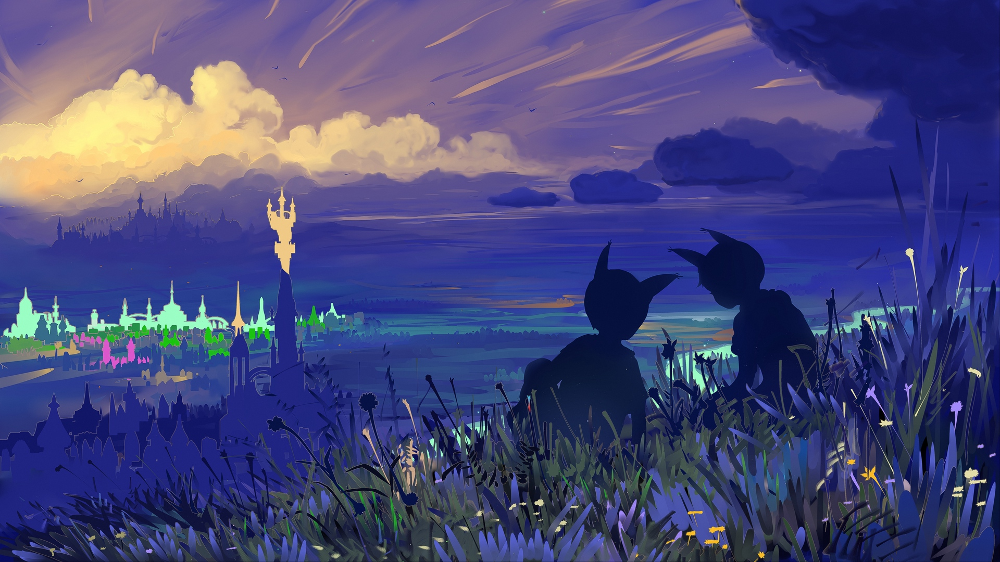

Lore

Genshin Impact adalah permainan aksi dan petualangan yang menggabungkan elemen dunia terbuka dan RPG, berlatar di dunia fantasi bernama Teyvat yang terbagi menjadi tujuh bangsa, masing-masing diwakili oleh elemen alam yang berbeda. Para pemain mengikuti petualangan Traveler, yang mencari saudara kembarnya yang hilang sambil mengungkap misteri dunia, bertemu dengan beragam karakter unik, dan menghadapi ancaman dari kekuatan jahat yang mengancam kedamaian Teyvat.
Character

Genshin Impact memiliki beragam karakter yang memiliki keahlian dan kepribadian unik, masing-masing dapat dimainkan oleh pemain dalam petualangan mereka. Setiap karakter memiliki peran dalam pertempuran dengan kemampuan khusus yang dapat digunakan untuk mengalahkan musuh dan membantu tim. Selain itu, karakter-karakter ini juga memiliki latar belakang cerita yang mendalam, memperkaya dunia game dengan keunikan mereka dan menyediakan berbagai interaksi dan dinamika dalam permainan.
Weapons
Senjata dalam Genshin Impact adalah alat penting untuk memperkuat karakter dan meningkatkan kemampuan pertempuran mereka. Terdapat berbagai jenis senjata, seperti pedang, tombak, busur, dan tongkat sihir, masing-masing dengan keunggulan dan gaya bertarung yang berbeda. Pemain dapat meningkatkan dan mengubah senjata mereka untuk meningkatkan statistik dan efek khusus, sesuai dengan gaya bermain dan kebutuhan strategis mereka dalam menghadapi berbagai tantangan dan musuh di dunia Teyvat.
Artifacts
Artifacts dalam Genshin Impact adalah item penting yang memberikan bonus statistik dan efek tambahan kepada karakter. Terdapat berbagai set artifacts dengan tema yang berbeda, seperti meningkatkan serangan, pertahanan, atau kemampuan elemen. Pemain dapat mengumpulkan dan menggabungkan artifacts untuk meningkatkan kekuatan karakter mereka sesuai dengan strategi pertempuran yang diinginkan, memungkinkan mereka untuk mengoptimalkan kinerja tim mereka dan menghadapi tantangan yang lebih besar di seluruh Teyvat.